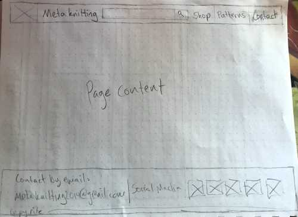

Overview
Purpose
To showcase the various types of knitted products that are offered by Metaknitting.
Audience
Anyone who loves weird hats, cosplayers who want a more practical material than plastic and cardboard, and those looking for gifts for their quirky friends.
Branding
Website Logo

Style Guide
Color Palette
Palette URL: https://coolors.co/ede8e9-beb5b1-9b581c-631f18-33032f
| Primary | Secondary | Accent 1 | Accent 2 | Accent 3 |
|---|---|---|---|---|
| [#A4031F] | [#453c3d] | [#d1cdcc] | [#f2f0ff] | [#fffefe] |
Typography:
Heading Font: Advent Pro
This font is sans-serif but with a tall, wide, irregular style.
Paragraph Font: Open Sans
This is one of my favorite body copy fonts. It's a little like Arial.
Navigation
Site Map
Made with octopus
Wireframes
